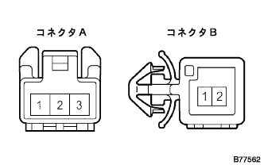

Front sheet innabelt ASSY LH single inspection |
| 1. Front sheet innabelt ASSY LH |
Buckle switch conductor inspection
|  |
Use SST (Toyota Electrical Tester) to inspect the conduction of each terminal in each state of the buckle.
| Buckle state | Terminal number | standard |
| Tung plate when wearing | A1 ← → B2 A3 ← → B1 | There is an conductor Without conduction |
| When taking off the tung plate | A1 ← → B2 A3 ← → B1 | There is an conductor There is an conductor |